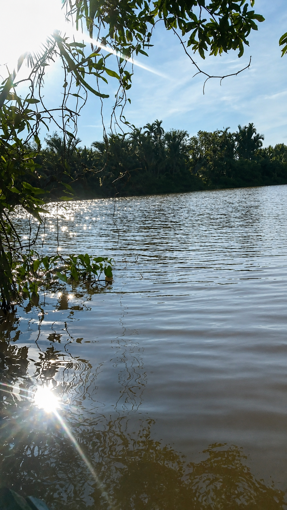
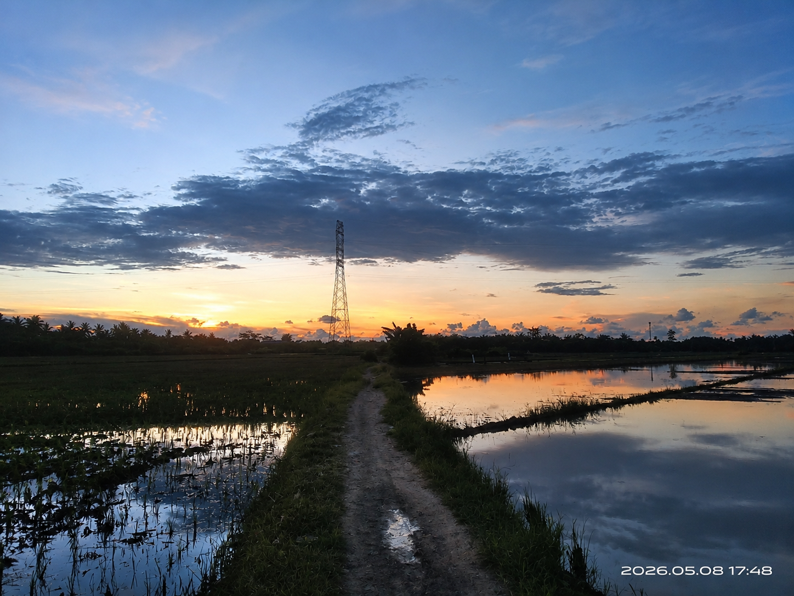

GALLERY
Pesona Alam Desa Sepadu
Nikmati keindahan pedesaan, sungai, dan hamparan sawah yang menenangkan.

Pesona Pedesaan
Suasana asri dan tenang Desa Sepadu

Pesona Sungai
Aliran sungai yang memberikan kesejukan dan keindahan alami.

Pesona Sawah
Hamparan hijau yang menjadi bagian dari keindahan pedesaan.

Keindahan Sawah
Hamparan persawahan yang hijau, asri, dan menyejukkan mata.